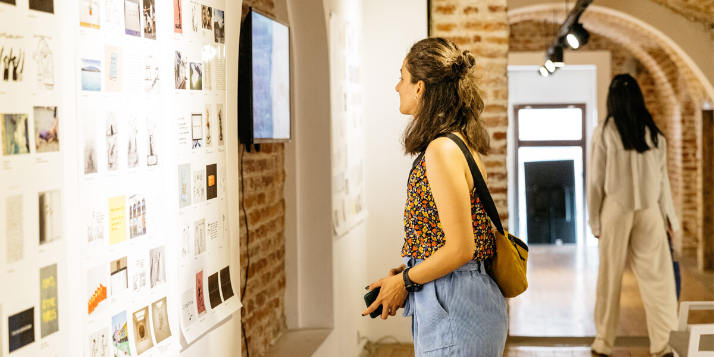

Zapraszam na warsztaty artystyczne, podczas których poznasz tajniki tradycyjnych technik malarskich. Zajęcia prowadzę w kameralnych grupach, dzięki czemu każdy uczestnik otrzymuje indywidualną uwagę i wsparcie.

Poznaj jedną z najstarszych technik malarskich. Podczas warsztatów nauczysz się przygotowywać emulsję temperową, mieszać pigmenty i tworzyć obrazy według metody wielkich mistrzów średniowiecza i renesansu.
Odkryj klasyczną technikę olejną od podstaw. Nauczysz się przygotowywać podłoże, pracować z mediami olejnymi i budować obraz warstwa po warstwie — od imprimatury po laserunki.
Wprowadzenie do świata malarstwa w przystępnej formie. Uczestnicy poznają podstawy kompozycji, mieszania kolorów i różnych technik — od akwareli po akryl.
Program
Gruntowanie desek i płócien, nakładanie gesso, szlifowanie — solidne podstawy pod malarstwo.
Praca z pigmentami naturalnymi, przygotowywanie emulsji temperowej i mediów olejnych.
Budowanie obrazu warstwa po warstwie — imprimatura, podmalowanie, laserunki, detale.
Napisz do mnie — ustalimy termin i szczegóły.
Zapisz się na warsztaty